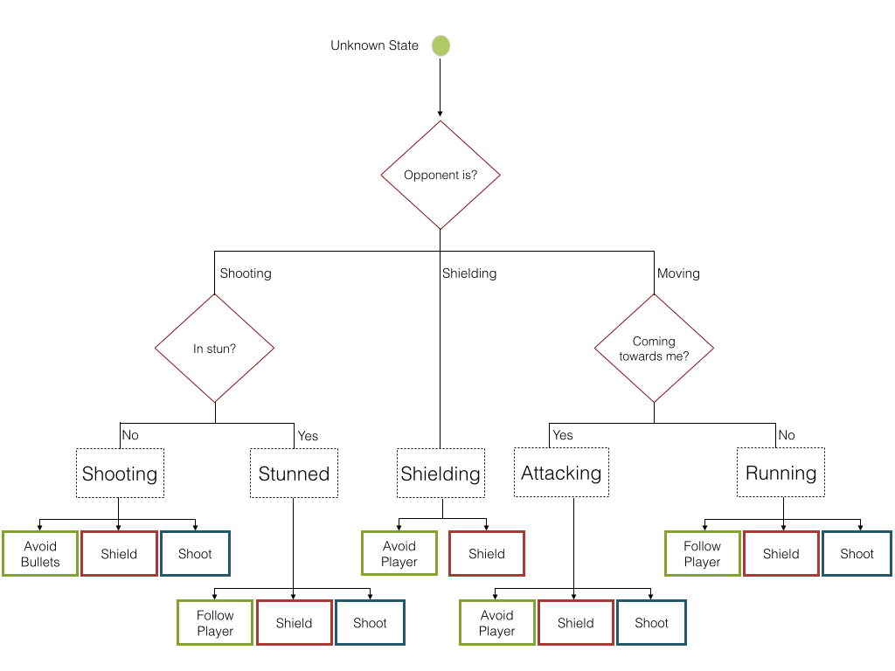
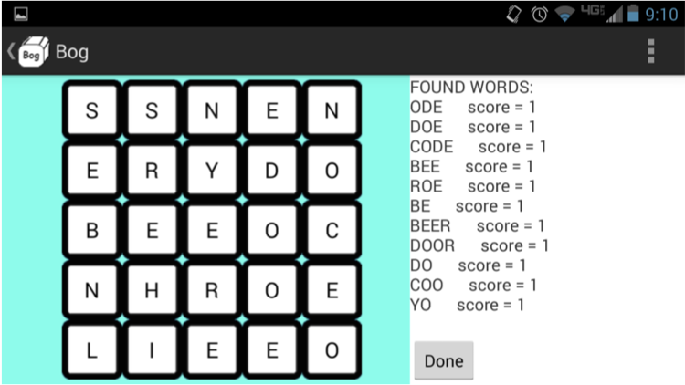

about me
school
I’m in my second year at University of Maryland, Baltimore County majoring in Computer Science. I’m taking classes like artificial intelligence and graph theory to try and specialize in making computers smarter and work better with people.
work experience
I’ve been working as a software engineering intern at Cougaar Software since the summer of 2013. My projects have included building robots and programming them using distributed design principles, as well as writing small hardware-based libraries to help Arduino and java communicate.
what's next?
I want a position that gives me the opportunity to learn about the different careers that computer science field has to offer. Really, anything will do, but if I had to pick I would say I’m especially interested in working with companies involved in robotics, high frequency trading, or big data; I’m really interested in helping computers understand and react to information.
On my own time, I want to work on web programming, learning Swift, and memorizing the seemingly infinite list of Mac keyboard shortcuts.
interests
I like to read about different theories and algorithms, but I prefer to try to write them myself. I also like to mess around with customizing my android phone and my mac and windows computers.
When I'm not on a computer, I like to play cards; mostly hearts, spades, and euchre; and listen to music, especially albums with a story like Tallahassee by The Mountain Goats. Oh and I like reading dystopian novels like Giver, Nineteen Eighty-Four, and We.
cool projects
real time artificial intelligence
Starting recently, I built a simple two dimensional shooting game. The player can move up and down as well as shoot and shield. The objective of this project is to practice implementing a small scale of the artificial intelligence that actually goes into video games. Currently, the AI consists of a state detection mechanism with several pre-programmed maneuvers to switch between based on the situation.  The system is modular enough that the maneuvers can be edited and swapped out easily. This is the maneuver to avoid the enemy:
// sets the computers intended position (goal) to the side
// of the screen opposite the opponent
public void run() {
while (isOn()) {
getPlayer().setGoal(getPlayer().getOpponent().getY()
getPlayer().getOpponent().getHeight() / 2 >
(getPlayer().getYLimit()/ 2) ? 0 : getPlayer().getYLimit());
chill(); // take time before calculating the next path
}
}I plan on expanding this project into neural networks in the near future.
decision tree
A few years ago, I was taking a self-led class. Over the course of the year, I was to develop one application of some sort that I was proud of to present to the class. The result was a computer that plays Connect Four. Using a data structure that I based on the minimax theorem, the computer could look a certain number (user defined) of moves into the future. Using its knowledge of the future, it determined the best move by deciding which move is most likely to lead to the desired board position. When deciding, it takes into account the best moves for itself, as well as the best moves for its opponent. The end result is a computer that's pretty hard to beat!
robotics
I was one of the founding member (that means I’ve been going since the first meeting) of UMBC’s robotics club, Retriever Robotics. I have been one of the principle programmers — either the lead or the only programmer, depending on how you look at it — for the entire existence of the club (Well up until recently. I actually have a protege right now, which is fun). I was also the treasurer for the 2014-2015 academic year, which was an experience.
We work on competition robots for VEX U. In the video below, you can see our robots (blue) beating the College of Southern Maryland in a match last year. The robot I spent the most time working on is the one that ends up doing the pull-up near the end.
boggle
I made the game boggle in java as a way to experiment with different data structures. After trying multiple different ways of storing the dictionary to check the words against, I decided to go with a trie. This trie ended up being perfect because I ended up using it in an algorithm to find all of the words on a given boggle board. Starting at any of the letters on the board, the algorithm looks at the adjacent tiles and sees if any of those can help it form a word, and it can tell if it forms a word based on whether or not those two letters in sequence have any children in the trie. In a group project in the spring of 2014, my boggle game was turned into an android app.  My work on the project was mostly the art and the back-end, data structures side.
Here's the video we turned to demonstrate the game:
this website
I’ve never been very good at designing things so they look alright. Even though I’m using a template, this is my first attempt at doing that. Eventually, I will move to a website I wrote from the ground up myself.